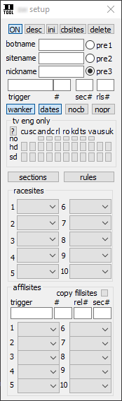
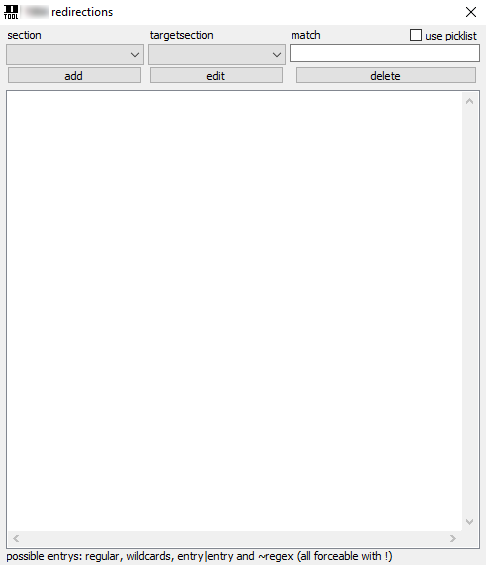
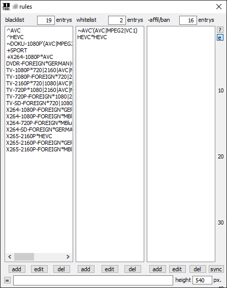

|
SITE ADDEN UND CONFIGEN
- Im Hauptmenü über den "+"-Button eine Site adden,
der Name muss genau so lauten wie die Site in cbftp/Rush benannt ist. Dann per
Klick auf die Site im Pulldownmenü das Sitemenü öffnen. Seitdem das Script mit Hash-Tables arbeitet ist es nicht mehr möglich Zahlen als Sitename zu verwenden, da die Tabellen damit ein Problem haben. Wie man eine Site umbenennt oder die Reihenfolge ändert ist unten erklärt.
- Im Feld "trigger" das Wort
eingetragen auf das reagiert werden soll wenn ein neues Race
kommt, zB. NEW oder STARTS. Was man einträgt muss nur in dem Wort
vorkommen, das heisst bei NEW-RACE würde "new" als Match auch ausreichen.
Daneben gibt es drei "#"-Felder. Hier muss die Nummer des Triggers, der Sektion und des Releases eingetragen werden.
Beispiel: NEW in TV-SD > DUMMY.REL by d-tool
Hier müsste im ersten Feld "1" eingegeben werden, im zweiten "3"
und im 3ten "5". Da "NEW", also der Trigger, das erste Wort ist,
"TV-SD" das dritte (also 3 für die Sektion), und "DUMMY.REL" das fünfte
Wort ist (also 5 für das Release)
Um dies zu erleichtern gibt es den Linecheck Befehl, der hier erklärt wird
- pre1/pre2/pre3
Eine der Prezeiten wählen, die man im Hauptmenü eingestellt hat.
- wankercheck
Aktivieren wenn der Wankercheck für diese Site aktiv sein soll.
- dates:
Aktivieren wenn im Chan das Datum mitgepostet wird,
wenn es sich um eine Sektion mit Unterordnern mit Datum handelt.
Man bekommt aber auch noch einen freundlichen Hinweis wenn man es
aktiviert.
-
nocb
Damit schaltet man auf dieser Site speziell von cbftp auf FTPRush, wenn cbftp Standard ist.
-
nopr
Damit schaltet man auf dieser Site den Pre-Recheck aus. Hilfreich wenn zB. Archiv filled wird. Wenn dann im Channel normal announced wird, springt natürlich der Pre-Recheck an, was kontraproduktiv ist.
- tv eng only
Es heisst "eng only", also aktiviert man mit den Buttons das was erlaubt ist, aufgeteilt in hd und sd.
(Abkürzungen: cu=current | sc=scripted |
an=animation | dc=docu | rl=reality | ro=romance | kd=kids | ts=tvshow | va=variety | us=USA/CA | uk=UnitedKingdom)
Man kann die "eng only"-Funktion mit dem schmalen Button darüber auch umdrehen. Ist dieser aktiviert, wird ein fehlendes Genre (an/dc/rl/ro/kd/ts/va) geskippt, wenn der Button bei hd/sd nicht aktiviert ist. Dann macht es einen Unterschied, ob man die Haken nicht gesetzt hat. Aktiviert man dann zB. das Genre Kids nicht, wird geskippt sobald ein Release mit Genre Kids vorkommt.
- racesites/affils
Hier werden die Sites eingetragen zu denen gefillt werden soll. Wählt man den Eintrag -none- wird die Site wieder entfernt. Wählt man den Eintrag -cb.rmv- wird die Site auch in cbftp von den targets entfernt.
Bei Affils ist die config ähnlich wie
oben bei den races, einfach den Trigger eintragen und die Zahlen der
Wörter und die Racesites. Zur Erleichterung
Sections
- Man startet ohne Sektionen und muss sie
erstmal unten über das Sektionsmanagement per "add new section" selbst
anlegen. Ich nehme als Beispiel APPS und nenne die Sektion "APPS.ENG.GER.". Sprachen muss man immer mit eintragen.
Es empfiehlt sich auch
Videoformate mit einzutragen, da das ebenfalls vom Wankercheck berücksichtigt wird.
Wenn man zB. x264 in die Sektionsbeschreibung
schreibt, muss zwingend 1080p/720p im Rls vorkommen, ansonsten wird es
geskipped.
- Links in der Liste wählt man dann die Sektion, die man bearbeiten möchte. So klick ich erstmal auf APPS.ENG.GER.
- Es gibt Buttons für 'race..', precheck und dated section.
'race in this section' bedeutet, auf die Site wird die Sektion
getradet. 'disable precheck' bedeutet, dabei wird kein Precheck gemacht.
'dated section' bedeutet diese Sektion ist in Datumsordner aufgeteilt,
zB. mp3/0day. Nutzt man jedoch als Verzeichnis einen Today-Ordner und
werden keine Daten in den Chans mitgepostet, muss dieser deaktiviert bleiben.
Als Datum wird ein selber eingetragenes Format benutzt, Erklärung folgt..
- Bei "name in chan" wird die Sektion eingetragen wie sie im
Chan gepostet wird. Sie arbeiten case-sensitive, also genau eintragen (Groß- und Kleinschreibung beachten).
- "path on site" und "allowed years" sollte klar sein. Diesen
Pfad dann bei mehreren Subdirs so angeben: DIR/SUBDIR/SUBDIR
- "wank" bezweckt das Ausstellen des Wankerchecks für diese Sektion
- "frgn/noIMDb" bezweckt das Ausstellen des Foreign- und IMDbChecks für diese Sektion
Prefix/Suffix
Wird die Sektion im Bot-Announce APPS: oder [APPS] genannt, muss man das hier
eintragen. Als Sektionenamen trägt man beim Beispiel [APPS] einfach nur APPS ein,
die Klammern bei Prefix bzw. Suffix, also ein [ bei Prefix
und ein ] bei Suffix.
Auch wenn beim Affilannounce etwas anderes gepostet wird wie -APPS-PRE- kann man das darüber regeln.
- redirections
Erklärung weiter unten
- mp3 foreign
Den Foreigncheck bei MP3/FLAC Sektionen ausschalten
- IMDb
Zum einstellen der erlaubten Ratings und Votes bei Filmen. Zusätzlich kann man in englischen Filmsektionen checken lassen ob die Sprache Englisch oder das Produktionsland USA ist, es Doku oder Comedy ist.
Bei Comedy werden allerdings auch Filmkomödien ausgeschlossen, nicht nur Comedyshows.
- dateformat
Hier stellt man das Standard Datumsformat ein, das bei Dated-Sections auf der Site benutzt wird
- special format
Hier kann man ein spezielles Datumsformat für die aktive Sektion festlegen
- ?
Zeigt das eingestellte Datumsformat für den jeweiligen Tag an
Requests
fill from here - Ob von dieser Site Requests gefillt werden sollen
get requests filled - Ob auf dieser Site Requests gefillt werden sollen
filled cmd - Ob auf dieser Site !reqfilled Commands gegeben werden sollen
glFTPd - Anhaken, wenn diese Site mit gl
läuft
(sieht man zB. daran, ob im Requestordner die
Requests mit Nicks versehen sind oder nicht. Wenn nicht und einfach REQ- das Prefix ist, ist es in der
Regel eine gl Site)
- directory
Hier den oder die Ordner angeben, in dem die Requests sind, zB. REQUESTS oder incoming/Requests
- chan
Hier den Chan angeben, in dem die Request-Befehle gegeben werden. Wenn es keinen bestimmten gibt, einfach frei lassen
- gl.prefix
Wenn es eine gl-Site ist und die Requestordner standardmässig
mit REQ-rls.rls-RLS angelegt werden, frei lassen. Wenn nicht, einfach
Eintragen was vor dem Request steht.
- redirections
Hiermit kann man bestimmte Releases von der Eigentlichen in
andere Sektionen lenken, wenn ein bestimmtes "match" im Release
vorkommt.
So kann man zB. SPORT eintragen, und alles, was als Sport angegeben wurde (/dtss), wird dann in die Sport Sektion geschoben.
Dazu noch ein Wort oder Zeichen in dem jeweiligem Release angeben, auf das reagiert wird, als "match".
Durch aktivieren von "use picklist" interagiert die Picklist mit dem Redirections Dialog und nicht mehr mit den Rules
Incompletes
Einfach anhaken und der Incfiller ist aktiv. Per Rechtsklickmenü kann man einstellen, ob
das Land berücksichtigt und ob das Announce im Infofenster
gepostet werden soll. Außerdem kann man die Zeiten ändern, wie oft und in welchen Abständen gecheckt wird ob etwas gefunden wurde.
Ja nachdem wie hoch die Anzahl der Sites ist bzw. wie beschäftigt der FTP Client ist, desto länger kann es dauern. Sind die Werte zu niedrig eingestellt, kann man das daran bemerken, dass nicht gefillt wurde, aber in der Datenbank Racesites stehen. Die Datenbank kann man per Kontextmenü im Incfiller Fenster öffnen.
Section Management
- edit name: ...
- change ID: Zum umsortieren der Sektionen. Das sollte man wenn dann hierüber machen.
Man kann nur unbelegte Nummern wählen, somit muss man bisschen tüfteln.
- add new section/delete section: ...
- sync sections: Alle Sektionen der Site mit cbftp syncen
- showsections:
Zeigt alle Sektionen im d-tool Fenster an. Man kann den Pfad anklicken, dann wird er zum Eintragen in cbftp in die Zwischenablage kopiert.
- show usage: Zeigt an auf welchen Sites es diese Sektion noch gibt
- open ini: sections.ini öffnen
Rules
Black- und Whitelist
Generell gilt Whitelist geht vor Blacklist. Man skippt mit der Blacklist
bestimmte Sachen oder ganze Sektionen und sagt dann per Whitelist, lass
dies und das durch. Zudem kann man dann per + in der Blacklist wiederum
sagen, lasse es trotz Whitelist nicht durch. Beide Listen sind case-sensitive.
Affil- und Banliste
Die Affilliste ist case-sensitive und kann keine Wildcards.
Affils am besten mit Strich eintragen (-GRouP). Wenn man auch andere
Groups neben den Affils eintragen will um diese auszuschliessen, dann
diese ohne Strich schreiben. So werden die Affils beim
"/dtaffils"-command richtig angezeigt.
Affils werden bei Pre Announce der Site automatisch hinzugefügt, ebenso in cbftp gesynct falls aktiv.
Falls man etwas geändert hat an den Affils, kann man die Liste manuell per sync-Button
mit cbftp syncen.
Beispiele für mögliche Einträge in den Rules und auch den globalen Listen siehe hier oder über den Button "?" direkt in mIRC.
Button "e" bewirkt, dass der Cursor automatisch ins Eingabefeld springt nachdem man einen Eintrag gewählt hat. Man hat danach 1s Zeit, so ist auch ein scrollen möglich.
height - Hier kann man die Dialoghöhe verändern
Picklist
In die Picklist kann man Bausteine
eintragen, die dann wiederum in das Eingabefeld von den Siterules
eingetragen werden können. Sie interagiert mit dem Eingabefeld der Siterules und nimmt Einträge auf bzw. gibt sie ab.
So kann man oft benutze Groups, Formate, etc. in der rechten
Liste speichern und nach belieben auswählen, ebenso die
Sektionen in der linken Liste. Alles wird nacheinander eingetragen. Im besten Fall muss man für einen Eintrag
dann gar keinen Tastenschlag machen, sondern kann sich alles aus
Bausteinen zusammen bauen.
Eintragen
Das was man adden will in das Eingabefeld von den Siterules
eintragen bzw. aus einer der Sitelisten wählen und in der Picklist auf
"add" drücken.
Editieren
Eintrag in der Picklist markieren (falls noch was in dem
Eingabefeld stand, doppelt klicken), und entsprechend editieren, dann in
der Liste auf "edit" drücken.
Löschen
Eintrag in der Liste wählen und "del" drücken.
Beim "picken"
Ein Klick fügt den Eintrag dem Eingabefeld hinzu (auch wenn dort schon etwas steht).
Ein Doppelklick löscht zuvor das Eingabefeld und fügt den Eintrag dann hinzu.
Reihenfolge der Sites ändern oder Site umbenennen
/dtedit in mIRC eingeben um die d-tool.ini zu öffnen. Nun in der ini nach ganz unten scrollen, dort sind die Sites gelistet. Ziemlich am Ende gibts es die Sektion [sites], die schön in Ruhe lassen. Die dort aufgelisteten Sites werden immer neu generiert. Darüber oder darunter stehen die Sites irgendwo aufgereiht, zB: [box] site=box - Das ist ein Eintrag für eine Site.
Site Reihenfolge ändern:
Die Reihenfolge im d-tool richtet sich danach, in welcher Reihenfolge diese Einträge in der ini vorhanden sind. Also alles entsprechend ordnen und die ini speichern.
Site umbenennen:
Den entsprechenden Eintrag in der d-tool.ini umbenennen, zusätzlich in den Ordner "mIRC/d-tool/inis gehen und dort manuell den Namen der ini selber umbenennen, in die ini gehen und in der ersten und zweiten Zeile den Sitenamen ebenfalls anpassen.
Dann zum Test das Hauptmenü von d-tool schließen und wieder öffnen.
|






|